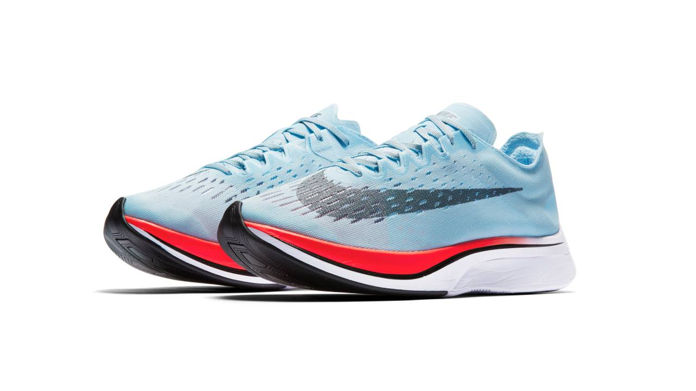

In 1954, Sir Roger Bannister ran the first four-minute mile. Bannister didn’t just break a record; he redefined what athletes were capable of and inspired confidence in others to do the same. This great story reminds us that inspiration — complete belief in an impossible goal — is at the core of human potential. After all, as Bill Bowerman, Nike’s co-founder and legendary track coach, once said, “The real purpose of running isn't to win a race, it’s to test the limits of the human heart." At its core, Breaking2 is about more than a marathon. Attempting to break the sub two-hour marathon challenges the perception of what is possible in sport, resets the expectations of product and enables Nike to gather incredible athlete insight. These lessons can be applied across everything Nike does, including products and services, to ultimately serve all runners. The only real failure would be to not attempt such an audacious goal
Reaching a sub two-hour marathon requires shaving seven seconds off each of the 26.2 miles of the marathon. Even for the world’s best runners this is a massive leap. Nike spent significant time identifying three elite athletes who are perfectly equipped for (and bold enough to take on) the challenge. Eliud Kipchoge of Kenya, Lelisa Desisa of Ethiopia and Zersenay Tadese of Eritrea are all lined up to attempt the impossible and run a sub two-hour marathon. These runners are not afraid of the unknown — they attack it.
Eliud Kipchoge, 32 years old, was born November 5 in Kapsisiywa, Nandi District and has won medals at both the Olympic and World level. Eliud began running after high school following years of observing his coach and mentor, Patrick Sang, who is still his coach to date. In 2003, Eliud made his debut in distance running after setting a world junior record in the 5000 meters at the IAAF World Cross Country Championship. Later that year, Eliud became World Champion at the World Championships in Athletics. In 2012, Eliud set a half-marathon best with a time of 59:25. Eliud won a bronze medal at the 2004 Athens Olympics in 5000 meters, a silver medal in the 2008 Beijing Olympics in the 5000 meters and most recently, a gold medal at the 2016 Rio Olympics in the men’s marathon. He improved his personal best marathon time by 5 seconds after winning the Berlin Marathon with a time of 2:04:00. In 2016, he improved upon that time even further when he set a new course record in the London Marathon achieving a winning time of 2:03:05.
Lelisa Desisa, 26 years old, was born January 14 in Shewa, Ethiopia. Early in his running career, Lelisa focused on road racing. He made his breakthrough in 2010 after running sub-60 minutes placing third at the Zayed International Half Marathon. He has won many high-profile races such as Boilermaker 15K, Cherry Blossom 10-miler, Bolder Boulder 10K and Delhi Half Marathon. Lelisa made his marathon debut by running 2:04:45 hours in the 2013 Dubai Marathon. Lelisa won the 2013 Boston Marathon and with the event of the bombings, he gave his medal back to the city of Boston to honor all the bombing victims. In 2015, he won the Boston Marathon again with a time of 2:09:17, and took second in 2016.
Zersenay Tadese, 34 years old, was born February 8 in Adi Bana, Eritrea. His bronze medal in the 10,000 meters at the 2004 Athens Olympics made him the first ever Eritrea Olympic medalist. He was also Eritrea’s first athlete to win a World Championship event when he took the 20-kilometer title in the 2006 IAAF World Road Running Championships. Zersenay has four consecutive victories in the World Half Marathon Championships from 2006-2009 and won the title again in 2012. He set a world record in the 2010 Lisbon Half Marathon and has won gold, silver and two bronze medals at the IAAF World Cross Country Championships. Zersenay is a four-time Olympian competing at the 2004, 2008, 2012 and 2016 Olympic Games. In 2009, Zersenay became the second man to win three World Championship medals over three different surfaces in the same year. Zersenay currently holds the men’s half marathon world record with a time of 58:23. His brother, Kidane Tadese, is also a professional distance runner.
Introduced in the Nike Zoom Vaporfly Elite, the Nike ZoomX midsole redefines the look, feel and performance of speed. And when combined with an embedded full-length carbon plate, Nike ZoomX midsole provides an innovative system for responsive cushioning which is designed to maximize speed and deliver greater energy return. The bold, performance-driven design of the Nike Zoom Vaporfly 4% makes runners 4% more efficient compared to Nike's previous fastest marathon shoe. An aerodynamic heel counter highlights the shoe’s aesthetic. A Nike Flymesh upper with midfoot dynamic archband provides zero distraction containment. The carbon fiber plate is tuned to minimize energy loss during toe bend without increasing demand for the calf. Finally, the Nike ZoomX midsole provides cushioning over every stride to return energy for push off. The result is a racing shoe built for the exact needs of world-class marathoners.
In lab tests, the shoe measured 4% better for running economy than Nike’s latest and fastest marathon racer – Zoom Streak 6. What does that mean? Consider this: A 4% improvement in running economy means you can run at the same pace, with 4% less effort. Improving running economy is a key determining factor in improving race performance. At any level, 4% improvement is a gigantic difference. Not just the difference between winning and losing, but possibly between a 3:01 marathon and something that starts with a 2.